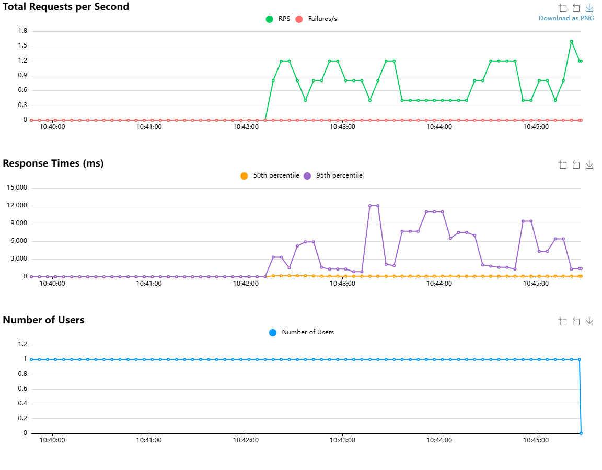

HOW TO READ
まず分けて読む4つの観点
大原則
並列度比較では、同じモデル・質問集合・最大出力長・wait_time・実行時間を固定します。比較対象は POST行のRPS、p50、p95、失敗率 と、独自SSE行のTTFT・TPOTです。異なる単位を合算するAggregated行は判定に使いません。
CONCURRENCY MODEL
並列度を変えたときの読み解き方
Users（並列度）
Locustが同時に動かす仮想ユーザー数です。各ユーザーはこのシナリオでは「チャット1回 → 1〜3秒待機」を繰り返します。UsersはRPSそのものではありません。
Spawn rate（立ち上げ速度）
1秒に何ユーザーずつ目標Usersまで増やすかです。定常性能は目標人数到達後の区間で読みます。立ち上げ中のグラフはウォームアップ／ランプアップとして分離します。
wait_time（思考時間）
タスク完了後に各ユーザーが待つ時間です。現在は1〜3秒。応答が遅くなるほど各ユーザーの次の要求も遅れ、同じUsersでもRPSは下がります。
このlocustfileの概算（1タスク = 実HTTP 1件）
期待RPS ≈ Users ÷（平均POST応答秒 + 平均wait秒）
必要Users ≈ 目標RPS ×（平均POST応答秒 + 平均wait秒）
これはシステムが飽和する前の近似です。飽和後はキュー待ちで応答時間が増えるため、Usersを増やしてもRPSは比例せず、p95や失敗率だけが悪化します。
1. Usersを確認グラフが目標並列度へ到達し、一定になった区間を選ぶ。
2. POST RPSを確認前の並列度からどれだけ処理量が伸びたかを見る。
3. p50/p95を確認典型値と遅い側がどれだけ悪化したかを見る。
4. 失敗を確認RPSの伸びが失敗増加と引き換えでないことを確認する。
VOLUME & AVERAGES
Request Statistics
行をクリックすると、その測定行の意味を表示します
| Type | Name | # Requests | # Fails | Average (ms) | Min (ms) | Max (ms) | Avg size | RPS | Failures/s |
|---|---|---|---|---|---|---|---|---|---|
| POST | /api/chat/completions | 40 | 0 | 6,765.01 | 811 | 144,946 | 0 | 0.12 | 0 |
| SSE | tokens_per_s | 40 | 0 | 38.99 | 1 | 43 | 0 | 0.12 | 0 |
| SSE | tpot | 40 | 0 | 23.59 | 23 | 25 | 0 | 0.12 | 0 |
| SSE | ttft | 40 | 0 | 3,626.85 | 114 | 140,143 | 0 | 0.12 | 0 |
| Aggregated | 160 | 0 | 2,613.61 | 1 | 144,946 | 0 | 0.46 | 0 |
独自SSE指標はLocustの「response_time」欄を流用して記録しています。したがって
tokens_per_s の数値単位は token近似/s、tpot と ttft は ms です。DISTRIBUTION
Response Time Statistics
| Method | Name | 50%ile | 60%ile | 70%ile | 80%ile | 90%ile | 95%ile | 99%ile | 100%ile |
|---|---|---|---|---|---|---|---|---|---|
| POST | /api/chat/completions | 1,600 | 2,000 | 4,300 | 6,500 | 9,400 | 12,000 | 145,000 | 145,000 |
| SSE | tokens_per_s | 40 | 40 | 41 | 42 | 42 | 43 | 43 | 43 |
| SSE | tpot | 24 | 24 | 24 | 24 | 24 | 24 | 25 | 25 |
| SSE | ttft | 120 | 120 | 120 | 130 | 180 | 210 | 140,000 | 140,000 |
| Aggregated | 110 | 120 | 130 | 1,300 | 2,100 | 7,000 | 140,000 | 145,000 |
ERRORS
Failures Statistics
| # Failures | Method | Name | Message | First Seen | Last Seen |
|---|
失敗記録なしこのサンプルでは失敗行が生成されていません。
失敗率0%はLocustの判定上の成功です。回答品質、ログ内の警告、SLO達成は別に評価します。
TIMELINE
Charts（時系列グラフ）
このシナリオ固有の注意
Locust標準Chartsは全Type/NameのAggregatedを描画します。現在の実装は、実POST 1件ごとに ttft・tpot・tokens_per_s の3イベントも登録するため、上段RPSは概ね「実HTTP RPSの4倍」です。中段もmsではない tokens_per_s を含むため、標準Response TimesグラフをPOSTレイテンシとして直接解釈できません。正確な比較には表／CSVのPOST・各SSE行を個別に使います。
ランプアップUsersが増加中。spawn rateの影響を見る区間で、定常性能の集計からは原則除外。
定常区間Usersが水平になった後。RPS・p50・p95が落ち着くまで待って比較する。
飽和の兆候Users増加に対してPOST RPSが頭打ち、p95が上昇、Failures/sが出始める。
終了区間Usersが0へ下がる部分。停止処理なので性能判定には含めない。

1Total Requests per Second
緑は全統計イベントの現在RPS、赤は現在Failures/s。標準シナリオならUsers増加に対する処理量を見るグラフですが、本実装では派生SSEイベント込みです。
緑は全統計イベントの現在RPS、赤は現在Failures/s。標準シナリオならUsers増加に対する処理量を見るグラフですが、本実装では派生SSEイベント込みです。
2Response Times
全統計イベントを合算した直近約10秒のp50（橙）とp95（紫）。通常は紫の急上昇をキュー発生の兆候として読みますが、本実装では単位混在に注意します。
全統計イベントを合算した直近約10秒のp50（橙）とp95（紫）。通常は紫の急上昇をキュー発生の兆候として読みますが、本実装では単位混在に注意します。
3Number of Users
現在の同時仮想ユーザー数。RPSと応答時間を同じ時刻で縦に見比べ、何並列から性能が崩れたかを判断します。
現在の同時仮想ユーザー数。RPSと応答時間を同じ時刻で縦に見比べ、何並列から性能が崩れたかを判断します。
並列度比較の典型パターン: Users↑・POST RPS↑・p95ほぼ一定＝余力あり ／ Users↑・POST RPS頭打ち・TTFT p95↑＝待ち行列化 ／ Users↑・TPOT p95↑＝同時生成で1ストリーム当たり速度低下 ／ Failures/s↑＝容量限界またはタイムアウト到達。
TASK DISTRIBUTION
Final ratio
Ratio Per Class
OpenWebUiUser100.0%
Total Ratio
chatCompletion100.0%